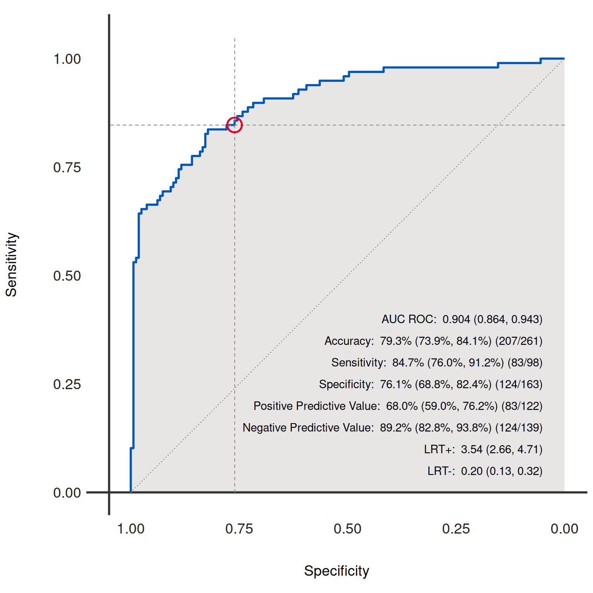

Generates and plots the Receiver Operating Characteristic (ROC) curve for the binary classification model represented by the given dx object. The ROC curve is a graphical representation of the trade-off between the true positive rate (sensitivity) and the false positive rate (1 - specificity) at various threshold settings.
Usage
dx_plot_roc(
dx_obj,
curve_color = "#0057B8",
fill_color = "#cfcdcb",
text_color = "black",
add_text = TRUE,
add_ref_lines = TRUE,
add_fractions = TRUE,
axis_color = "#333333",
add_ref_circle = TRUE,
ref_lines_color = "#8a8887",
circle_ref_color = "#E4002B",
summary_stats = c(1, 2, 3, 4, 5, 6, 7, 8),
filename = NA
)Arguments
- dx_obj
An object of class
dxcontaining the necessary data and statistics for generating the ROC curve.- curve_color
Color of the ROC curve. Default is "#0057B8".
- fill_color
Color filled under the ROC curve. Use "transparent" for no fill. Default is "#cfcdcb".
- text_color
Color of the text included on the ROC curve. Default is "black".
- add_text
Logical; if TRUE, includes statistical annotations on the ROC curve. Default is TRUE.
- add_ref_lines
Logical; if TRUE, includes reference lines on the ROC curve. Default is TRUE.
- add_fractions
Logical; if TRUE, includes fraction details in text annotations. Default is TRUE.
- axis_color
Color of the x and y axis. Default is "#333333".
- add_ref_circle
Logical; if TRUE, includes a reference circle around the point of specified threshold. Default is TRUE.
- ref_lines_color
Color for reference lines. Default is "#8a8887".
- circle_ref_color
Color of the reference circle. Default is "#E4002B".
- summary_stats
A vector of integers indicating which statistics to include on the ROC curve. Default is c(1, 2, 3, 4, 5, 6, 7, 8).
- filename
File name to create on disk using
ggplot2::ggsave. If left NA, no file will be created.
Details
The ROC curve is a widely used tool for diagnosing the performance of binary classification models. It plots the true positive rate (sensitivity) against the false positive rate (1 - specificity) for various thresholds. A model with perfect discrimination (no overlap in the two distributions) has an ROC curve that passes through the upper left corner (100% sensitivity, 100% specificity). Therefore the closer the ROC curve is to the upper left corner, the higher the overall accuracy of the test.
The dx_roc function allows for extensive customization of the ROC curve, including color schemes, reference lines, text annotations,
and more, to accommodate a variety of visualization needs and preferences.
The area under the ROC curve (AUC) provides a single scalar value summarizing the performance of the test. The AUC can be interpreted as the probability that a classifier will rank a randomly chosen positive instance higher than a randomly chosen negative instance.
The function also provides options to include a reference circle at a specific threshold point, reference lines indicating a 45-degree line (chance line) and lines for the chosen threshold's specificity and sensitivity, and fill color under the curve.
Examples
dx_obj <- dx(
data = dx_heart_failure,
true_varname = "truth",
pred_varname = "predicted",
outcome_label = "Heart Attack",
threshold_range = c(.1, .2, .3),
setthreshold = .3,
grouping_variables = c("AgeGroup", "Sex", "AgeSex")
)
dx_plot_roc(dx_obj)
#> Warning: All aesthetics have length 1, but the data has 263 rows.
#> ℹ Please consider using `annotate()` or provide this layer with data containing
#> a single row.
#> Warning: All aesthetics have length 1, but the data has 263 rows.
#> ℹ Please consider using `annotate()` or provide this layer with data containing
#> a single row.
#> Warning: All aesthetics have length 1, but the data has 263 rows.
#> ℹ Please consider using `annotate()` or provide this layer with data containing
#> a single row.
#> Warning: All aesthetics have length 1, but the data has 263 rows.
#> ℹ Please consider using `annotate()` or provide this layer with data containing
#> a single row.
